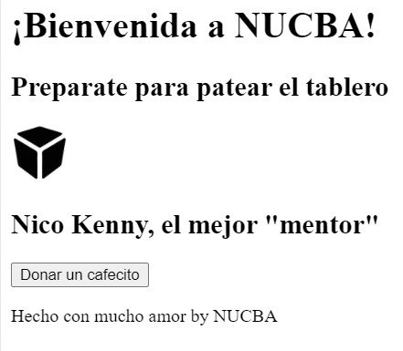
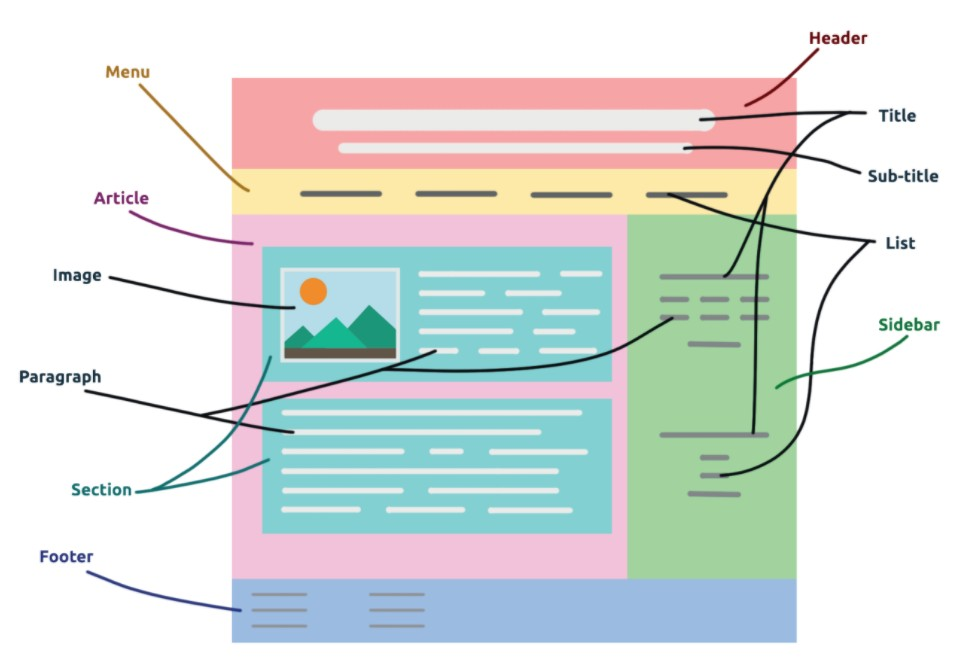

Html for Dummies | Introducción
Hoy les traemos una introducción al diseño web con HTML cómo parte de nuestro módulo Pre-Course, ¿están list@s?
üî• Les dejamos un plus, esta es la primera web de todos los tiempos ->
Etiquetas HTML | Introducción
Hoy veremos un poco sobre las etiquetas HTML que son las más usadas para crear cualquier documento para este lenguaje.üí™
Les dejamos el link del VS CODE, el IDE (software) para que vayan descargándolo antes de las clases en vivo ---->
Primeros pasos con CSS | Introducción
üëΩ Links de utilidad ->
Git & Github | Introducción
üëΩ Links de utilidad ->
Git & Github + Vercel | Introducción
üëΩ Links de utilidad ->
Diseño UX UI | Introducción
Hoy les dejaremos una clase de Diseño UX UI con algunas terminologías como experiencia de usuario, ux research, y un poco de contexto histórico.
üëΩ Links de utilidad ->
Grillas | Introducción
Hoy les traemos un repaso general sobre un recurso que se usa en diseño para la organización visual de los elementos que componen una pieza gráfica.
üëΩ Links de utilidad ->
Fundamentos del Diseño | Introducción
Hoy traemos a la mesa los fundamentos básicos del Dise√±o. üí™
Tambi√©n, los invitamos a ver el siguiente #NucbaPlay üëâ
Tipografía - Diseño | Introducción
Falta tan solo D√çAS para encontrarnos. Hoy les traemos una clase sobre Tipograf√≠as, un recurso muy importante para el look & feel de nuestros productos.üí™
L@s invitamos a seguirnos en Spotify üëâ
Subite a la Nucbanetta | Arrancamos üöÄüéì
üëâ Vamos a detallar una informaci√≥n muy IMPORTANTE para el ingreso a la plataforma ZOOM que es el lugar donde deberán acceder a sus clases semanalmente. Les voy a indicar su ID (un c√≥digo de admisi√≥n) con el cual podrán acceder a una reuni√≥n (que será la clase con el profe y sus compa√±eros).
Por lo cual, este ID: 891 6306 7911 será como la clave de su celular o el homebanking, por lo tanto, no lo pierdanüôÖü誂Äç‚ôÄÔ∏è pero si lo hacen, pueden volver a acceder a este sal√≥n para recordarla.
El Código de Acceso es:
üëâ Disfruten el proceso porque a partir de acá pueden crecer profesionalmente en la industria.
üëâ Menos es más.
üëâ El aprendizaje es constante y colectivo!
üî•üî¥ Si te llego este mensaje pero todav√≠a no estás en algunas de las siguientes plataformas o estás en un cumple, comunicate con nosotros/as al wsp de Alumnos/as.
Discord üéÆ Acordate que al ingresar, tenes que leer el apartado de #Bienvenida, #Reglamento y luego asignarte un rol en #Asignate-Un-Rol.
1° CLASE- LUNES 27/03/2023: 1.1 - Introducción | Diseño Web
- PAGINA PARA APRENDER A CODEAR (HTML, CSS, JAVASCRIPT, PYTHON, SQL, PHP, JAVA, W3.CSS)(importante para buscar etiquetas): w3schools.com
- PAGINA QUE VERIFICA QUE SE CUMPLAN TODOS LOS ESTÁNDARES IDEALES DE NUESTRO PROYECTO (sirve para terminar un proyecto): validator.w3.org
A continuación les dejamos algunos links de utilidad:
- Link del VS CODE, el IDE (software) que vamos a estar utilizando para escribir código Visual Studio Code
- Esta es la primera web de todos los tiempos
- Buenas Practicas de HTML5
Documentación sobre algunos elementos HTML
Plugins Recomendados de VSC
- MITHRIL EMMET
- AUTO RENAME TAG
- COLOR HIGHLIGHT
- MATERIAL ICON THEME
- PATH AUTOCOMPLETE
Desafío:
- Crear un archivo html
-
Utilizando las etiquetas vistas en clase, crear su perfil, es decir:
- Foto de perfil
- Lista con edad, nombre, apellido, mail.
- Un párrafo con una breve descripción de ustedes.
üíº Documentaci√≥n HTML | Dise√±o Web
ü•ö Primeros pasos con HTML
En esta documentación podremos ver en detenimiento la base que necesitamos para comenzar a desarrollar páginas web. Además, les iremos dejando documentación oficial de interés, entre otras cosas en la
Primero lo primero... ¬øQu√© es una página web? üñ•Ô∏è
Una página web es un documento de texto HTML que puede ser leído por cualquier navegador con acceso a internet que puede incluir audio, vídeo, texto y sus diferentes combinaciones. La primera página web fue creada por Tim Berners-Lee en 1990.
La primera web de todos los tiempos üëâ http://info.cern.ch/hypertext/WWW/TheProject.html
Pero ¬øQu√© es HTML? üî•
HTML, de sus siglas en inglés HyperText Markup Language, es un lenguaje de marcado (no de programación) . Esto significa que podremos definir la estructura y contenido de nuestra página utilizando etiquetas.
Tipos de elementos HTML
Existen dos tipos de elementos de HTML según la sintaxis utilizada para definirlos.
Por un lado, existen los elementos que tienen contenido como por ejemplo un párrafo (< p >< /p >) . Este tipo de elementos se escriben utilizando dos etiquetas: la etiqueta de apertura (< p>)y la etiqueta de cierre (< /p >) .
Por otro lado, existen los elementos que no poseen contenido sino que se utilizan para mostrar en nuestra pagina ciertos elementos como por ejemplo una imagen (< img />) . Este tipo de elementos se escribe utilizando una única etiqueta, la cual se "cierra sola".
Buceando en las etiquetas HTML üåä
En la actualidad existe una gran cantidad de etiquetas a nuestra disposición para utilizar en nuestras páginas web. Estas etiquetas, además de ir aumentando en cantidad, fueron evolucionando a lo largo del tiempo, ya que en un comienzo podíamos usar un número acotado de etiquetas como < p> o < a>.
En HTML5 (la última versión de html), aparecieron las llamadas etiquetas semánticas como < header > y < section >, las cuales no tienen una diferencia funcional a las ya existentes, sino que sirven para estructurar la página web y, además, nos dicen claramente las distintas partes de una página web.
Estas etiquetas nos permitirán definir con claridad (tanto para nosotros como para el navegador) las distintas secciones de nuestra web.
Las etiquetas más utilizadas üëá
ESTRUCTURALES
< header>: La etiqueta header se utiliza para marcar un grupo de elementos como cabecera. El uso de ésta etiqueta no está restringido a uno por documento, sino a uno por sección.
< nav>: La etiqueta nav se utiliza para marcar una sección del documento cuya función es la navegación por el sitio.
< section>: La etiqueta section se utiliza para marcar una sección genérica del sitio.
< footer>: La etiqueta footer se utiliza para marcar el pie de sección o del documento.
< div>: La etiqueta div, a diferencia de las anteriores, es una etiqueta no semántica ya que no define en su declaración.
DE CONTENIDO
< p>: La etiqueta p se utiliza para mostrar párrafos de texto.
< h1> a < h6>: Las etiqueta h (de 1 a 6) se utilizan para mostrar títulos de distinto nivel de importancia. Es importante saber que en cada documento HTML puede haber un único h1, pero mas de un h2 a h6.
< span>: La etiqueta span se utiliza para mostrar cualquier elemento HTML lineal.
< img>: La etiqueta img se utiliza para mostrar imágenes en nuestra web.
< a>: La etiqueta a se utiliza para definir links en nuestra web que nos permitan ir a otros documentos HTML (otras paginas web) o movernos a través de un mismo documento HTML.
En el siguiente enlace podrán encontrar todas las etiquetas de HTML disponibles en la actualidad, acompañadas de una breve descripción sobre la utilidad de cada una de ellas.
üê£ Mi primer HTML
En esta sección desarrollaremos un pequeño HTML básico donde podremos identificar algunas etiquetas y/o secciones importantes.
Un documento HTML debe tener una estructura definida y estándar para ser leída y renderizada correctamente por un navegador. Veamos un ejemplo:
En el documento anterior podemos ver tres etiquetas sumamente importantes:
< html>< /html>: esta etiqueta es la base de nuestra web; sin esta etiqueta, el navegador no podrá identificar correctamente las distintas partes de la pagina.
< head>< /head>: esta etiqueta nos permitirá definir dentro de ella ciertos parámetros y configuraciones que NO se verán directamente en el cuerpo de nuestra pagina, pero que afectaran de una u otra forma a la misma.
< body>< /body>: esta etiqueta es, como dice la palabra, el cuerpo de nuestro HTML. Adentro de ella definiremos las distintas partes visibles de nuestra web
La pagina web que vemos arriba se vera así:
Ahora les dejamos una infografía con un poco más de detalle en las estructuras y etiquetas:
Pero como dijimos antes, esto es tan solo la estructura de nuestra pagina web (y claramente no es muy linda que digamos...). Para que nuestra pagina web sea atractiva, debemos introducir a un nuevo amigo/a, CSS.
üé® CSS 101
En esta sección introduciremos una nueva tecnología que nos permitirá hacer de nuestra página web un sitio más amigable, atractivo y agradable para los usuarios que la visiten a través de los estilos
¬øQu√© es CSS? ü•≥
CSS, de sus siglas Cascading Style Sheets o en español Hojas de estilo en cascada, es un lenguaje utilizado para definir el estilo de los distintos elementos de nuestro archivo HTML.
A la hora de escribir CSS, hay que entender varios conceptos tales como atributos, selectores, propiedades, especificidad, entre otras muchas cosas, así que empecemos.
Atributos
En HTML, las etiquetas pueden tener, además del contenido, ciertos atributos con algún objetivo en particular. Por ejemplo, cuando queremos mostrar una imagen en nuestra página utilizamos la etiqueta < img/> con el atributo src, el cual indica qué imagen queremos que se muestre.
Como se ve en el ejemplo, los atributos tienen asociados valores a través de la sintaxis atributo="valor".
A la hora de utilizar CSS en nuestros proyectos, es necesario conocer dos atributos presentes en todos los elementos HTML: class y id. Estos atributos nos permitirán identificar nuestros elementos HTML en un archivo CSS (por ahora).
El atributo id, como se podrán imaginar, nos servirá para identificar a un elemento específico de nuestro documento HTML, mientras que el atributo class nos permitirá identificar un conjunto de elementos HTML que compartan ciertas características.
< h1 id='titulo'>El titulo de mi pagina web< /h1>
< p class='parrafo'>La descripcion de mi seccion 1< /p>
< p class='parrafo'>La descripcion de mi seccion 2< /p>
En el ejemplo anterior vemos como identifico al titulo, el cual será único e irrepetible en mi sitio, con el id titulo, mientras que a los párrafos que se repetirán a lo largo de toda mi web los identifico con la clase párrafo.
Selectores
Para terminar de entender los atributos de HTML, presentaremos a los selectores.
Un selector en CSS hace referencia a la sintaxis utilizada para definir en mi archivo .CSS a qué elemento o elementos de HTML se le aplicarán los estilos que vaya definiendo a lo largo del documento. Existen muchos selectores, pero para comenzar solos nos interesará entender los que se relacionan directamente con lo visto anteriormente sobre id y class.
En CSS, como base, podremos seleccionar elementos HTML a través de estos dos atributos de una manera muy simple. Si lo que buscamos es seleccionar el titulo del ejemplo, utilizaremos el símbolo # seguido del ID en cuestión: #titulo . De esta manera, podremos aplicarle los estilos que queramos a ese elemento específico.
Ahora, si lo que buscamos es seleccionar los párrafos, utilizaremos el símbolo . seguido de la clase: .parrafo. En este caso, no estaremos seleccionando un único elemento sino que seleccionaremos todos los que tengan dicha clase como atributo.
En CSS, los elementos HTML poseen distintas propiedades con valores específicos que, entre otras cosas, permitirán cambiar el color del texto, el color de fondo de un contenedor o el tamaño del texto.
En el ejemplo de arriba podemos ver cómo utilizamos, por un lado, los selectores para decidir a qué elementos le damos ciertos estilos y a qué elementos no.
Además, vemos como le decimos a CSS que queremos que los elementos con la clase párrafo tengan una fuente de color rojo y un tamaño de 20px, y por otro lado, el elemento con id titulo tenga un fondo de color verde
De esta forma, podremos definir el estilo de cualquier elemento de nuestro HTML utilizando cualquier propiedad disponible y soportada por el navegador.
En este enlace podrán encontrar más información al respecto de todas las propiedades que CSS tiene disponibles para jugar.
2° CLASE- MIERCOLES 29/03/2023: 1.2 - Html for Dummies - Formularios y Etiquetas Estructurales | Diseño Web
Material teórico correspondiente a la clase:
A continuación les dejamos algunos links de utilidad:
Desafío práctico:
- Tomar el archivo HTML del desafío anterior.
- El contenido del archivo colocarlo dentro de un DIV.
- Crear un form de contacto abajo de nuestra info.
üõ†Ô∏è Sistema de entregas - Inscripci√≥n
Les damos nuevamente la bienvenida a NUCBA y les pedimos que completen los siguientes datos en nuestro formulario para poder acceder al sistema de entregas:
El día Jueves se les habilitará la primera entrega del módulo, así que no cuelguen y vayan anotándose Esten atentos al canal de Discord de la camada para mas información sobre la entrega en los siguientes días.
3° y 4° CLASE- LUNES 03/04/2023 Y MIERCOLES 05/04/2023: 1.3 Git + Github - Instalación y Comandos Básicos I y II | Diseño Web
- DESCARGAR GIT: git-scm.com
- CREAR USUARIO EN GITHUB: github.com
Material teórico correspondiente a la clase:
Les dejamos el link con documentación oficial de GIT y una guía de instalación:
- Documentación oficial github
- Instalar Git
- Juego para aprender git
- Documentación de Nucba sobre Git
Desafío práctico:
- Crear un repositorio.
- Subir el material de los desafíos que hicimos en las clases anteriores.
- Compartir el repo en el canal privado de Discord.
üíº Documentaci√≥n Git y Github | Dise√±o Web
⚒ GIT Y GITHUB
En esta documentación nos centraremos en Git y Github. Y el modo en que esta combinación de tecnologías nos va a permitir mejorar nuestro stack de conocimientos.
⚠ ¡Atención! Un aviso antes de empezar
Esta documentación abarcará los fundamentos teóricos y prácticos de Git y GitHub, a su vez, implementaremos Vercel para poder ver por primera vez a nuestros proyectos cobrando vida.
Comenzaremos con los primeros pasos y conceptos básicos del sistema de Versiones de Git. Para luego ingresar en el mundo remoto (online) de GitHub y la forma en la que se vinculan para concretar un correcto funcionamiento.
Los contenidos se agruparan desde los conceptos de cada tecnología, su parte práctica y por ultimo herramientas o curiosidades que nos potenciaran nuestro flujo de trabajo de cada día.
Es importante tener en cuenta que el objetivo de esta documentación no es más que conocer e implementar más herramientas para mejorar nuestro rendimiento. En un principio puede parecer difícil o sin utilidad alguna, pero podemos asegurarle que en un futuro van a ser las tecnologías que más utilicen en su entorno de desarrollo. Ya sea que trabajen solos o con compañeros.
Necesitamos comprender los conceptos, ir de a poco y a medida que sigan avanzando con el aprendizaje de otros lenguajes de programación vuelvan a leer la documentación y sigan practicando bajo los mismos parámetros para ir encontrándole cada vez más coincidencias con el contexto en el que se encuentren trabajando en ese momento.
❓ ¿Qué es y para qué sirve?
En esta primera sección conoceremos a GIT y la importancia que tendrá en nuestra carrera como desarrolladores, es vital comprender su funcionamiento para poder avanzar en la ruta de aprendizaje.
Git: Nuestro nuevo amigo ü§úü§õ
Git es un sistema de versiones donde vamos a poder ir actualizando todas las partes de nuestro proyecto, y manejarnos en ramas para desarrollar nuevas secciones, mantener el código de producción a salvo y corregir errores, todo esto permite un entorno de trabajo mucho más limpio y organizado.
Git fue creado por Linus Torvalds, quien tambi√©n es el creador del sistema operativo Linux. üñ•Ô∏è
¬øPara qu√© sirve Git? ü§î
Con Git vamos a poder controlar todos los cambios que se hacen en nuestra aplicación y en nuestro código para tener control absoluto de todo lo que pasa en el mismo.
De este modo, podemos volver atrás en el tiempo, abrir diferentes ramas de desarrollo, comparar código antiguo, entre otras opciones.
¬øEsto tiene sentido? ü§Ø
Absolutamente no. En estos momentos nuestra cabeza piensa en archivos estáticos, pocas líneas de código y apenas sitios sin ningún estilo.
Pero es importante comprender el correcto funcionamiento y el modo de trabajo que nos provee Git, para que en un futuro los procesos colaborativos y el versionado de nuestro código esté a la altura de la situación. ✅
⬇ Instalación
Luego de entrar en una crisis existencial por intentar entender que tiene que ver Git con un h1, vamos a proceder a instalarlo correctamente en nuestra computado
Instalaci√≥n en Windows ü뮂Äçüíª
Al momento de iniciar el instalador, debemos asegurarnos de marcar la opci√≥n de instalar Git Bash en nuestra computadora (esto nos permitirá correr comandos de Linux en la consola sin problemas para trabajar con Git). üíª
Es de suma importancia (en caso de utilizar la misma aplicación) elegir la opción que figura en la anterior imagen. Esta misma va a permitirnos utilizar al Visual Studio Code como nuestro editor por default.
Luego debemos avanzar con las opciones predeterminadas del instalador de Git hasta finalizar con el proceso.
¿Cómo se maneja esto?
Independientemente de tu sistema operativo, ya deber√≠as tener Git instalado en tu computadora. Ahora es tiempo de comenzar a usar Git Bash y sacarle el máximo potencial al sistema de versiones. üí™
Pero... ¬øC√≥mo puedo moverme en una terminal, que es una terminal, se maneja sola, es un tema dif√≠cil de hackers? ü•¥
NO. No es un Tesla que se maneja solo, ni las pantallas piratas de las pel√≠culas de informática. Es accesible para que todos la usemos, y de vital importancia para nuestra carrera c√≥mo programadores. üôÇ
üîù Primeros pasos en la terminal
Luego de un café y una increíble reflexión de que no importa lo difícil que sea, pero que tenemos que aprender Git para progresar en el desarrollo de software: vamos a meternos en la terminal.
Aprendiendo a manejar la terminal ü뮂Äçüíª
Esta misma nos permite interactuar con nuestra computadora sin necesidad de utilizar una interfaz gráfica. Sin embargo, las computadoras usan diferentes sistemas de archivos y manejan distintos comandos, dependiendo del sistema operativo que utilicen.
Diferencias entre la estructura de archivos de según SO
GitBash usa la ruta /c para dirigirse a C:\ (o /d >para dirigirse a D:) en Windows. Por lo tanto, la ruta del usuario con el que estás trabajando es: /c/Users/Nombre de tu usuario
Abrimos Git Bash
Iremos a nuestro buscador de aplicaciones para encontrar la terminal descargada recientemente (No importa en que sistema operativo te encontras)
Comandos básicos en la terminal:
No debemos aprender todos los comandos de memoria, solamente con la practica vamos a ir recordando cada uno luego de errar en su tipeo varias veces.
¬°A preparar los ojos, son muchos! üëÄ
pwd: Nos muestra la ruta de carpetas en la que te encuentras ahora mismo.
mkdir: Nos permite crear carpetas (por ejemplo, mkdir Carpeta-Importante).

touch: Nos permite crear archivos (por ejemplo, touch index.html).
rm: Nos permite borrar un archivo o carpeta (por ejemplo, rm index.html).
cat: Ver el contenido de un archivo (por ejemplo, cat index.html).
ls: Nos permite cambiar ver los archivos de la carpeta donde estamos ahora mismo.
ls -a: Mostrar todos los archivos, incluso los ocultos.
ls -l: Ver todos los archivos como una lista.
cd: Nos permite navegar entre carpetas.
cd /: Ir a la ruta principal
cd o cd ~: Ir a la ruta de tu usuario
cd .. (cd + dos puntos): Regresar una carpeta hacia atrás.
clear: Para limpiar la terminal. Podemos usar los atajos de teclado Ctrl + L o Command + L en Mac.
Una vez procesada la cantidad exhaustiva de comandos de la terminal de Git Bash , debemos introducirnos en los conceptos básicos de nuestro sistema de versiones para sacarle el máximo provecho.
üëë Creando nuestro primer repositorio Git
primeros pasos prácticos para comenzar a trabajar con este sistema de gestión de versiones Git. Arrancaremos creando nuestro primer repositorio local.
Antes de empezar‚Ķ. ¬øQu√© es un repositorio? ‚Äçü§∑
Un repositorio de Git es un almacenamiento local (por ahora) y virtual de tu proyecto. Te permite guardar versiones del código a las que puedes acceder cuando lo necesites.
Preparando el entorno de trabajo ü뮂Äçüéì
Iniciar un repositorio en Git no es una tarea compleja. Lo primero que debemos hacer es crear aquella carpeta donde va a vivir nuestro proyecto, usando los comandos que aprendimos la sección anterior.
Antes de que hayan creado esta carpeta, deben verificar que lo hayan hecho en el directorio correcto, en donde ustedes quieran que se encuentre esta carpeta que van a generar. La dirección actual donde nos encontramos está indicada en la línea superior, pero también lo pueden hacer de la siguiente manera.

Por último, debemos movernos hacia esa carpeta con el comando cd.

Ahora sí, estamos listos para comenzar a lanzar los comandos git en nuestra terminal.
Iniciando nuestro repositorio Git ü뮂Äçüíª
Una vez que estamos en la carpeta central de nuestro proyecto, lo único que debemos hacer es escribir el comando git init. Parecerá que no ha ocurrido nada, pero habremos inicializado un repositorio local.
Esto genera una carpeta oculta .git , en donde vivirá la base de datos con los cambios atómicos (atómico porque cada cambio se guarda de una manera independiente) de los archivos de nuestro proyecto.
De esta manera, los cambios que ocurran en los archivos que se encuentran dentro de nuestra carpeta, serán “escuchados” por Git. Cada una de estas modificaciones que mandemos al repositorio será una nueva versión de nuestro archivo.
üåå Ciclo básico de trabajo
En esta página nos enfocaremos en el ciclo básico de trabajo en Git. También, aprenderemos sobre los primeros comandos básicos, como el add, commit o status.
Creando nuestro primer archivo dentro de Git üöÄ
Para esta sección, crearemos el primer archivo que tendrá nuestro proyecto. Será un .txt con un contenido de relleno, e iremos realizando diferentes cambios para entender su comportamiento.
Comandos básicos üíª
Uno de los comandos más usados en los proyectos con Git es el git status. Esto nos permitirá ver el estado de nuestro archivo.
Si leemos con atención el mensaje, nos dice: “Untracked files”, y luego nos aparece nuestro archivo en rojo. Pero…. ¿Qué significa esto?
Los archivos “untracked” son aquellos que Git todavía no está rastreando sus cambios, no es “consciente” de las modificaciones que ocurrieron. Es decir, que existen en nuestro directorio de trabajo, pero todavía no están en nuestro repositorio local. Para esto, debemos añadirlos con el comando git add y el nombre del archivo.
En caso de que tengamos varios archivos sin rastrear, podemos utilizar el shortcut git add . y automáticamente se añadirán todos.
√Årea de Staging üì¨
Ya hemos hecho un git add para todos aquellos archivos que Git todavía no registraba. Pero todavía no hemos terminado.
Estos archivos pasaron a un área que se conoce como staging. ¿Qué significa esto?
El staging es el área que se crea en memoria RAM temporalmente al que agregamos archivos que vamos cambiando a través git add. En otras palabras, es un área de preparación, lugar temporal antes de enviar los cambios al repositorio.
Por eso, cuando hicimos un git add, Git ya nos marcaba nuestros archivos en verde, para decirnos que ya conoce sus cambios, pero nos avisaba que todavía nos faltaba confirmarlos a través del mensaje: “Changes to be committed”.
Para llegar a aquel repositorio real que creamos anteriormente con el git init, debemos usar el comando git commit, que nos permite confirmar un cambio, al cuál le podemos agregar una breve descripción.
La forma de agregar esta descripción es a través del flag -m y luego escribiendo el comentario entre comillas.
Y listo!! Ya no tenemos archivos untracked ni nada por registrar a través de un commit.
Si todavía tienen dudas de que todo haya funcionado correctamente, pueden usar el comando git log, el cual le mostrará la historia de todos los commits con su respectivo mensaje de nuestro proyecto.
üå≥ Ramas
En este módulo nos adentraremos en el concepto de rama dentro de Git. Además, veremos algunos términos relacionados con el tema.
¬øKeseso de las ramas? üßÄ
Las ramas son la forma que nos provee Git para dividir nuestro entorno de trabajo, y poder realizar cada funcionalidad sin afectar ni depender del resto.
Podemos entenderla como una línea independiente de desarrollo que nos sirve para abstraer los procesos de cambio, preparación y confirmación .
Cada rama tiene su propio historial de confirmación (commits), lo que crea una bifurcación en el historial del proyecto.
Probablemente veas esta imágen y te confundas un poco. Por ahora, lo más importante que tienes que saber es que cuando creamos una rama, básicamente creamos una copia del último commit de la rama donde nos encontramos. De esta forma, podemos comenzar a trabajar en una nueva feature con la versión más reciente de nuestro proyecto.
5° CLASE- LUNES 10/04/2023: 1.4 - Git + Github - Branches y Merges + Vercel | Diseño Web
-
Material teórico correspondiente a la clase:
-
Les dejamos la clase anterior y además les dejamos la documentación oficial de Vercel.
- VERCEL, conectar GITHUB con VERCEL para poder VER Y SUBIR NUESTROS PROYECTOS vercel.com
- Primeros pasos en Vercel
-
Desafío práctico:
- Practicar Ramas en Github. üëâ Tranqui si no sale, lleva mucho tiempo, pero hay que empezar por algo!.
- Por último, agarrar el repo del desafío anterior y vincularlo con Vercel.
- Compartí el link en el canal privado de Discord.
-
Para tener en cuenta, si te sale un Error 404:
Ya a partir de la siguiente clase vamos a comenzar a darle forma a nuestro esqueleto HTML con CSS.
6° CLASE- MIERCOLES 12/04/2023: 1.5 - CSS 101 - Sintaxis , Selectores y Propiedades Básicas | Diseño Web
-
Material teórico correspondiente a la clase:
-
Les dejamos a continuación algunos links de recursos para que puedan repasar las etiquetas y demás cuestiones:
-
Desafío práctico:
¿Se acuerdan de la página que estábamos haciendo como desafío de las clases de HTML? es momento de empezar a darle un poco de forma a esa estructura HTML utilizando los estilos vistos en esta clase.
7° CLASE- LUNES 17/04/2023: 1.6 - CSS II - Fonts - Box Model + Position | Diseño Web
-
Material teórico correspondiente a la clase:
-
Les dejamos algunos links de utilidad:
-
Desafío práctico:
Aprovechen para hacer un repaso general de lo visto hasta ahora. Si quieren, pueden agregar las propiedades vistas hoy al desafío de la clase anterior.
8° CLASE- MIERCOLES 19/04/2023: 1.7 - CSS III - Flexbox | Diseño Web
-
Material teórico correspondiente a la clase:
-
Les dejamos algunos links de utilidad:
-
Desafío práctico:
Creá un div contenedor en el cual tengas 5 divs hijos y anda probando como reacciona el código a los cambios a medida que vas utilizando las distintas propiedades de flexbox que vimos en clase, para poder ir entendiendo bien que hace cada propiedad.
9° CLASE- lunes 24/04/2023: 1.8 - Práctica Flexbox - Nucba NFT I | Diseño Web
-
Material teórico correspondiente a la clase:
-
Les dejamos algunos links de utilidad:
-
Desafío práctico:
Revisá lo visto hoy en clase y revisá si hay algo que no entiendas para poder llevar la duda para preguntarla en la clase siguiente.
10° CLASE- MIERCOLES 26/04/2023: 1.9 - Práctica Flexbox- Nucba NFT II | Diseño Web
-
Desafío:
Ahora que terminamos de realizar la versión desktop de nuestro proyecto NFT, aprovecha para volver a mirar las clases e intentá replicarlo para ver si estás entendiendo bien lo que realizado en clase por el profe.
E3 (03/05/2023): Challenge Landing Page - Hero + About | Diseño Web
Buenas, ¿Cómo están? En este desafío van a continuar con el desarrollo de la landing page que comenzamos con la entrega anterior. En esta ocasión van a estar realizando las dos primeras secciones de su página. En primer lugar, van a realizar una sección comúnmente denominada “Hero” o “Portada” con información relacionada a lo que quieran ustedes utilizar como temática de la landing que están realizando. Deberán replicar el siguiente formato(estructura y posicionamiento de los elementos) utilizando sus propias imágenes y contenido:
Luego de esta sección, deberán realizar otra con un pequeño texto informativo, para que a medida que los “usuarios” de la página vayan scrolleando , puedan tener mas información sobre la temática de la página en cuestión ( página personal, página de un negocio, etc.).
Les dejamos algunos links con recursos que pueden utilizar para aplicar en su página:
- Undraw Ilustraciones que pueden utilizar como imagen de su portada
- UIGradients Gradientes que pueden colocar como background de algún elemento copiando el código que nos facilita la página.
Tengan en cuenta que los desafíos que están en los posteos de las clases no son para entregar. Aquellos que lo sean tienen un posteo aparte en la plataforma.
Les recomendamos que actualicen el repo que “SUPUESTAMENTE” armaron para el desafío anterior, así se van uniendo todas las entregas y va tomando forma nuestra landing.
Forma de entrega:
- Los ejercicios deberán ser entregados por medio de Galileo , la plataforma de entregas de Nucba.
- Deberán subir su trabajo a un repositorio de Github, deployarlo en Vercel, y entregar ambos links.
- No se aceptarán archivos sueltos, comprimidos ni subidos a drive.
Tiempos de entrega y corrección:
Dispondrán exactamente de 1 SEMANA para realizar la entrega desde su habilitación.
Una vez que hayan realizado la entrega y desde el equipo de mentoría verifiquen que hayan trabajado en lo solicitado, se les habilitará el video de resolución en el posteo de la entrega en Galileo (Sistema de entregas de Nucba), para que puedan contrastar con lo realizado por ustedes, revisar si pueden mejorar algunas cosas y, en caso de que hayan tenido dudas con la resolución, puedan usar el video como guía para poder corregir aquellos puntos que no hayan logrado resolver a la hora de realizar el trabajo.
Cualquier consulta que tengan sobre la entrega podrán realizarla por el canal de Discord de la camada.
#HappyCoding üöÄ
11° CLASE- MIERCOLES 03/05/2023: 1.11 - Responsive Design - Nucba NFT | Diseño Web
-
Material teórico correspondiente a la clase:
-
Desafío práctico:
Te dejamos abajo el link de uno de los tantos challenges que tenemos en la plataforma de Nucba para realizar.
La idea es que realices este diseño y que lo hagas adaptable a todos los dispositivos, utilizando las herramientas que venimos viendo hasta ahora, incluyendo media queries. Si querés, podes ir chusmeando los otros y hacerlos para seguir practicando.
Link al challenge de cards
12° CLASE- LUNES 08/05/2023: 1.12 CSS V - Pseudo-Clases y Pseudo-Elementos | Diseño Web
-
Material teórico correspondiente a la clase:
-
Les dejamos algunos recursos sobre Pseudo Clases y Pseudo Elementos:
-
Desafío práctico:
¿Se acuerdan del challenge de cards del desafío de la clase pasada? Aplíquenle alguna de las cosas que estuvimos viendo en esta clase.
13° CLASE- MIERCOLES 10/05/2023: 1.13 CSS VI - Animaciones y Transiciones | Diseño Web
-
Material teórico correspondiente a la clase:
-
Les dejamos algunos links de utilidad:
14° CLASE- LUNES 15/05/2023: 1.14 - Animaciones y microinteracciones - Nucba NFT | Diseño Web
-
Material teórico correspondiente a la clase:
-
Les dejamos algunos links de utilidad:
-
Desafío práctico:
Repasen lo visto hasta ahora y aprovechen para ponerse al día con los contenidos anteriores en caso de que lo necesiten.
15° CLASE- MIERCOLES 17/05/2023: 1.15 - Metodología BEM + Presentación del Integrador | Diseño Web
-
Material teórico correspondiente a la clase:
-
Les dejamos algunos recursos relacionados a la clase de hoy:
- Documentación oficial metodología Bem
- Behance - Inspiración para el integrador
- Happy Hues - Paletas de colores para el integrador
- SaaS Pages Muestra las distintas partes de una página divididas por categorías (Navbar, Hero, etc). Sirve también para inspirarse.
-
Desafío práctico:
No tendremos desafío en esta clase, aprovechen para empezar a trabajar sobre el integrador.
16° CLASE- LUNES 22/05/2023: 1.16 - Metodologías Agiles | Diseño Web
-
Material teórico correspondiente a la clase:
-
Desafío práctico:
No hay desafío para esta clase, aprovechen para meterle fuerte al integrador y repasar la clase de hoy.
17° CLASE- MIERCOLES 24/05/2023:1.17 CSS VII - CSS GRID | Diseño Web
-
Material teórico correspondiente a la clase:
-
Les dejamos algunos links de utilidad:
-
Desafío práctico:
Creá un div contenedor en el cual tengas 5 divs hijos y anda probando como reacciona el código a los cambios a medida que vas utilizando las distintas propiedades de grid que vimos en clase, para poder ir entendiendo bien que hace cada propiedad.
18° CLASE- MIERCOLES 31/05/2023: 1.18 - Practica Grid - Coffee Gallery | Diseño Web
-
Material teórico correspondiente a la clase:
-
Desafío práctico:
Modificá la galería hecha en clase con el fin de que quede distribuida de manera distinta pero que siga manteniendo una visual aceptable.